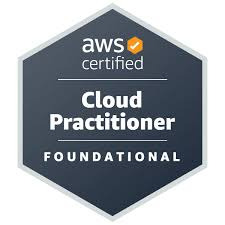

Helena Oliveira Silva
Profissional de tecnologia com experiência em sustentação, observabilidade e evolução de aplicações críticas no setor financeiro. Atuação com monitoramento, troubleshooting, análise de incidentes e suporte a ambientes AWS utilizando Datadog, CloudWatch, Linux e APIs REST. Experiência em desenvolvimento backend Java e foco atual em CloudOps, DevOps, SRE e Platform Engineering. Certificada AWS Cloud Practitioner e Google Cloud Computing Foundations.
Certificações Cloud

AWS Certified Cloud Practitioner
Google Cloud Computing Foundations